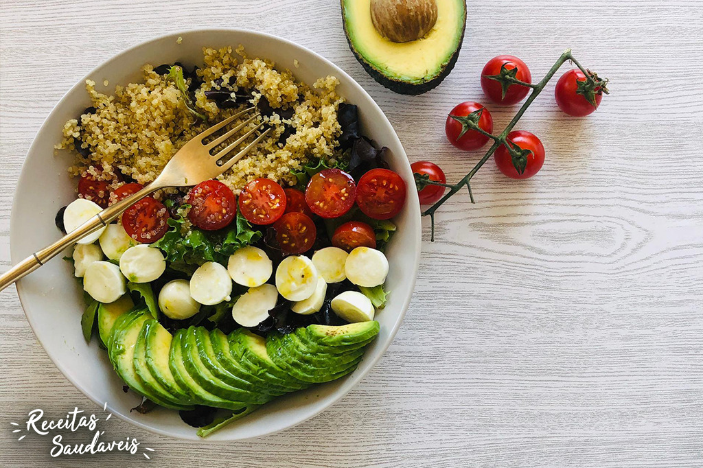
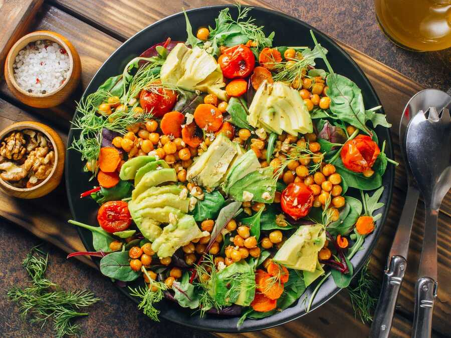

Salada refrescante e nutritiva de quinoa com abacate e legumes.
Esta salada leve e cheia de nutrientes é perfeita para o almoço ou como acompanhamento. A quinoa é uma excelente fonte de proteína vegetal, enquanto o abacate fornece gorduras saudáveis, e os legumes frescos trazem vitaminas essenciais.
Este smoothie verde é uma excelente opção para começar o dia com energia e frescor. Ele é carregado de fibras, antioxidantes e nutrientes essenciais para limpar o organismo e melhorar a digestão.
Smoothie delicioso de morango, perfeito para refrescar o dia.
Este smoothie de morango é uma opção perfeita para quem busca uma bebida refrescante e saudável. Com a combinação de morangos frescos e iogurte natural, essa receita é rica em vitaminas, antioxidantes e probióticos.
Brownie saudável de banana com aveia, sem glúten e fácil de fazer.
Este brownie de banana com aveia é uma opção deliciosa e saudável para quem busca uma sobremesa nutritiva. Feito com apenas alguns ingredientes simples, como banana e aveia, ele é rico em fibras, sem glúten e naturalmente adoçado.

Salada refrescante e rica em proteínas com grão-de-bico e abacate.
Essa salada é uma refeição completa e cheia de sabor, rica em proteínas do grão-de-bico e gorduras saudáveis do abacate. Perfeita para o almoço ou um jantar leve.
Panqueca saudável e nutritiva de banana e aveia, ideal para o café da manhã.
Estas panquecas são uma excelente opção para um café da manhã saudável. Feitas com aveia e banana, elas são naturalmente adoçadas e muito nutritivas. Perfeitas para começar o dia com energia!